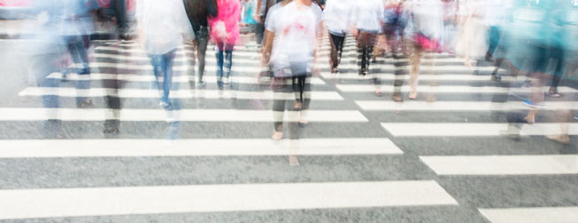

Sizwe’s Smile
Today Sizwe learns that a smile is something you can give away without losing it.
It had been raining for days, and everyone was grumpy. Everyone except Sizwe, who woke up with a smile every morning.
“Yoh! Sizwe! That smile is magic!” said Gogo. “Is it for me?”
Sizwe clapped his hand over his mouth. “But it’s MY smile, Gogo,” he whispered.
His mother laughed. “Sizwe! A smile is something you can give away without losing it. Look!”
She lifted him up to the mirror. There was his smile, just as bright as before.
It was time to go out. Mama buttoned up Sizwe’s raincoat, and off they went, through the rain, to the library.
Down the street, Sizwe’s best friend Zanele stood at the window of her house, looking sadly at the rain.
Sizwe felt his smile creeping, creeping up. Before he knew it, his smile LEAPT out, and flew across the garden to Zanele.
Zanele held on tightly to the smile – it was far too precious to let it get away.
As Sizwe walked away to the library, Zanele’s doorbell rang. It was the postman, with a letter from her favourite cousin.
Zanele was so happy, that the smile bounced up, and beamed out at the postman.
“Thank you, Mister Postman!” she said.
Zanele’s smile was the brightest thing the postman had seen all morning. It kept him warm as he trudged off through the rain.
He came to a big house. Inside the gate, a dog was spinning around in circles, barking, barking, barking. He was so silly, that the postman couldn’t help smiling.
The smile bounced through the gate with a glitter of glee.
The dog stopped barking. He pricked up his ears and wagged his tail. Then he turned and ran back to the house with the precious, warm smile.
A bent old man opened the door. “Oh, no! You can’t come inside. You’re all wet!” he told the dog. But right away, the smile beamed up at the old man.
The old man stood a little straighter. “Eish,” he said, “Who cares if it’s raining? Let’s go for a walk, boy!” And off they went, splashing in the puddles.
There, at the zebra crossing, stood grumpy Mrs Makabela, the traffic cop. She looked cold, and wet, and miserable.
The old man knew just what to do. “Morning, Mrs Makabela!” he called, and smiled his biggest, brightest smile.
But Mrs Makabela... did not smile back.
Standing in the rain for days can make a face sad, sad, sad.
But a smile is a magical thing and, by now, the smile was so strong, and so bright, that it was very hard to keep inside.
It didn’t work right away, but bit by tiny bit, it began to creep out until, at last...!
A great, big smile lit up Mrs Makabela’s face!
The school bell rang, and children ran to cross the road. Mrs Makabela put up her sign, and smiled, and smiled, at each and every child.
The children smiled at their moms and dads, and their gogos and tatas and brothers and sisters. They smiled at the bus driver and the greengrocer, and Mme Makau, who went off to smile at her husband, who smiled at the mayor...
The smiles leapt and rolled and beamed and gleamed until EVERYONE was smiling and giggling and laughing out loud in the rain.
In the library, everything was quiet except for the sound of the rain.
“It’s time to go,” said Sizwe’s mother, closing her book.
“Aw, mom!” said Sizwe, who had run out of smiles.
But as they stepped out into the street... WHAT A SIGHT!
Everyone in town was there!
Everyone!
And they were ALL smiling!
The smiles bounced around and beamed at Sizwe. They warmed him, and tickled him, and crept up, up, up from his toes... to the TOP of his head. He was so full of happiness that the smile burst out, brilliant and beaming bright.
And something changed. The dark, gloomy, rainy afternoon didn’t seem so dark anymore.
Could it be...? YES!
The clouds parted, and the warm sun shone down on them, with the biggest, brightest, most brilliant smile of all.
[Reading Level 4.2]
- grumpy: bad mood
- whispered: speak in a soft, low tone
- creeping up: silently approaching to surprise
- precious: of great value
- beamed: smile widely and happily
- trudged off: walk away in a heavy way
- glitter of glee: (slang) shinning with joy
- splashing: cause water to rise up quickly and fall again
- miserable: very unhappy
- greengrocer: person who sells vegetables
- gloomy: grey, overcaste sky
- zebra-crossing: cross-walk (with painted stripes that look like from a zebra)

Photo Credit: Designed by Freepik
Ref: Google Dictionary, Oxford Learners Dictionaries, kids.wordsmyth.com, MacMillan Dictionary, Word Hippo
- grumpy: Грэмми: муу сэтгэлийн байдал
- whispered: шивнэн: зөөлөн, зөөлөн дуугаар ярь
- creeping up: Мөлхөдөг: гэнэт чимээгүйхэн ойртон ирлээ
- precious: Үнэт зүйл: их үнэ цэнэтэй
- beamed: Баярлалаа: инээмсэглэн өргөн, аз жаргалтай байна
- trudged off: Чиргүүл: хүнд хэцүү замаар явах
- glitter of glee: Сайхан сэтгэлийн гялбаа: - Сла - баяр хөөрөөр гэрэлтүүлдэг
- splashing: Ус цацах: ус хурдан өсөх, дахин унах шалтгаан болдог
- miserable: зовлонтой: маш аз жаргалтай
- greengrocer: хүнсний ногоо зардаг хүн
- gloomy: Гунигтай: саарал, бүрхэг тэнгэр
- zebra crossing: Зебел-хөндлөн гарц: хөндлөн алхах. тахө шиг харагдах будгаар зурдаг
Source: Translate.Google.com
- grumpy: сердитый: плохое настроение
- whispered: шептать: говорить мягким, низким тоном
- creeping up: ползти: молча приближаясь к удивлению
- precious: драгоценный: большой ценности
- beamed: сияние: улыбка широко и счастливо
- trudged off: уклонился: уйти тяжело
- glitter of glee: блеск радости: (сленг), сверкающий от радости
- splashing: брызг: заставить воду быстро подняться и снова упасть
- miserable: несчастный: очень несчастный
- greengrocer: человек, который продает овощи
- gloomy: мрачный: серый, пасмурное небо
- zebra crossing: пересечение зебры: перекресток. с окрашенными полосками, которые выглядят как зебра
Source: Translate.Google.com
- grumpy: Көңілді: жаман көңіл-күй
- whispered: пышақ: жұмсақ, төмен тонбен сөйлеңіз
- creeping up: сергіту: үнсіз жақындап қалды
- precious: қымбат: өте құнды
- beamed out: жымиып: күлімсіреу кең және бақытты
- trudged off: трагедиялық: ауыр жолмен жүру
- glitter of glee: қуанышпен жарқыратып (сленгті) жарқырайды
- splashing: шашырау: су тез көтеріліп, қайтадан құлап кетуі мүмкін
- miserable: бақытсыз: өте бақытсыз
- greengrocer: көкөніс сатушы: көкөніс сататын адам
- gloomy: мрачным: сұр, аспанға аспан
- zebra crossing: зебра қиылысы: көлденең өту. Зебрадан көрінген боялған жолақтармен
Source: Translate.Google.com
- grumpy: ไม่พอใจ: อารมณ์ไม่ดี
- whispered: กระซิบ: พูดด้วยเสียงต่ำโทน
- creeping up: คืบคลานขึ้น: เงียบ ๆ แปลกใจ
- precious: ล้ำค่า: มีคุณค่า
- beamed out: ยิ้มกว้างและมีความสุข
- trudged off: เดินออกไปอย่างหนัก
- glitter of glee: พรั่งพร้อมของความยินดี: (สแลง) ส่องสว่างด้วยความปิติยินดี
- splashing: กระเด็นน้ำ: ทำให้น้ำเพิ่มขึ้นอย่างรวดเร็วและลดลงอีกครั้ง
- miserable: น่าสังเวช: ไม่มีความสุขมาก
- greengrocer: คนขายผัก: คนที่ขายผัก
- gloomy: มืดมน: สีเทา, ท้องฟ้ามืดครึ้ม
- zebra crossing: ม้าลายข้าม: ข้ามเดิน มีลายเส้นที่ดูคล้ายจากม้าลาย
Source: Translate.Google.com
- grumpy: gruñón: mal humor
- whispered: susurrado: habla en un tono suave y bajo
- creeping up: arrastrándose: acercándose silenciosamente para sorprender
- precious: precioso: de gran valor
- beamed: radiante: sonríe ampliamente y felizmente
- trudged off: caminamos con dificultad: aléjate de una manera pesada
- glitter of glee: (argot) brillando con alegría
- splashing: salpicar: hace que el agua se levante rápidamente y vuelva a caer
- miserable: muy infeliz
- greengrocer: verdulero: persona que vende verduras
- gloomy: melancólico: gris, cielo excesivo
- zebra crossing: Paso de cebra: caminata cruzada (con rayas pintadas que parecen de una cebra)
Source: Translate.Google.com